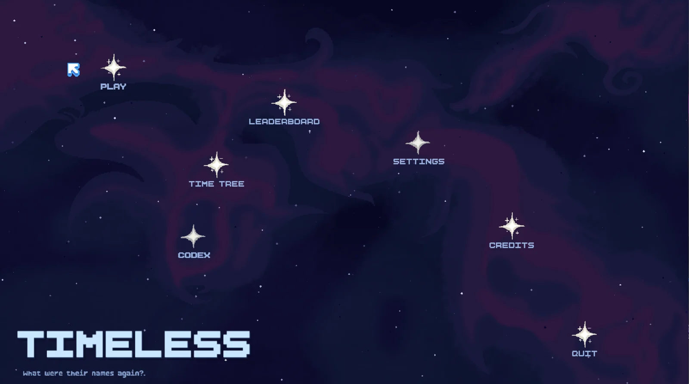
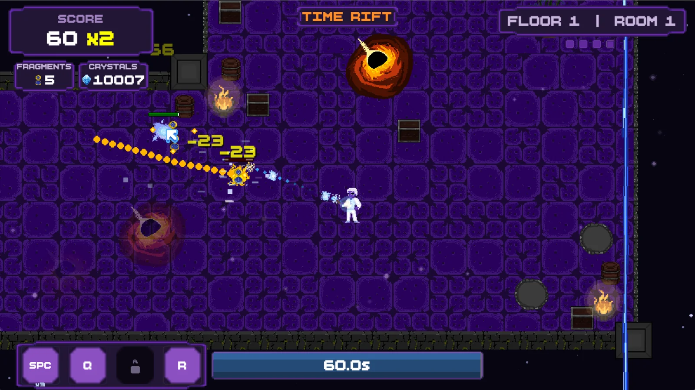
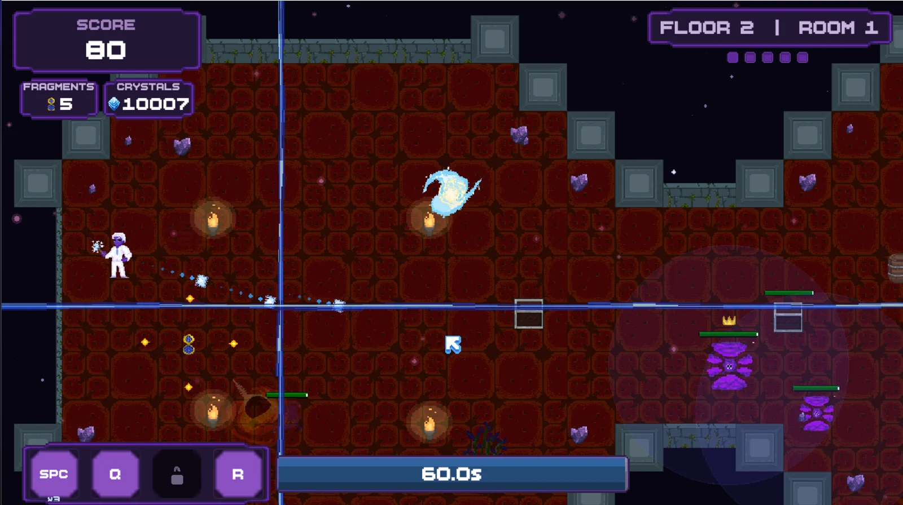
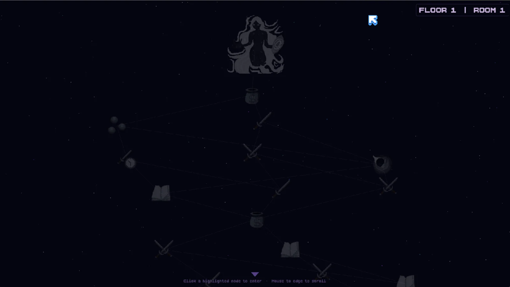
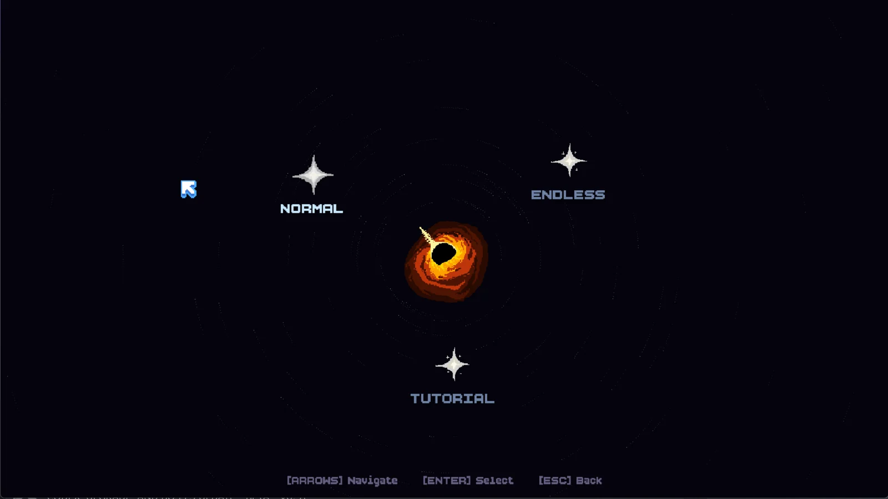
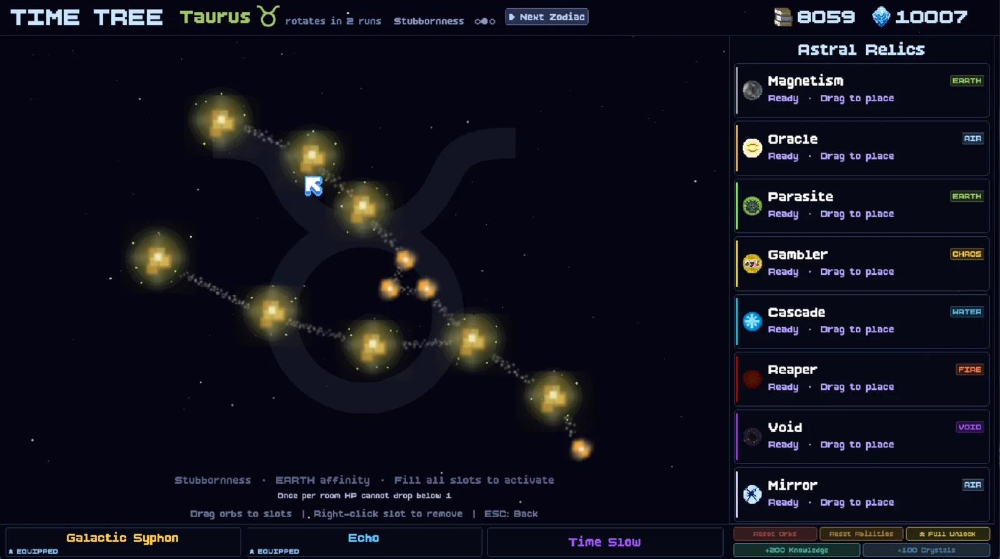
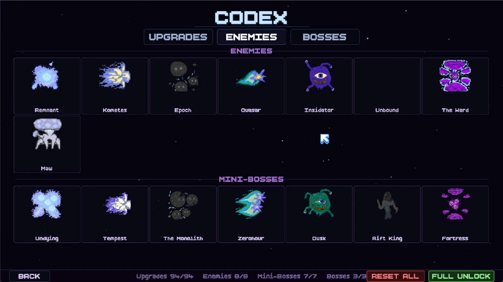
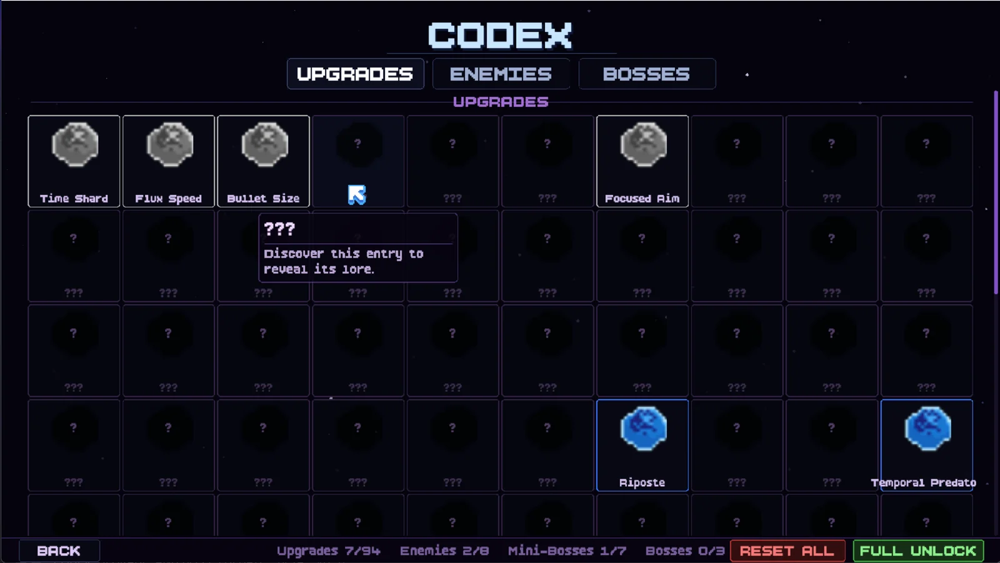

Timeless
A twin-stick roguelike where the clock is the health bar. You don’t lose hit points, you lose seconds — and when they run out, so do you. Built from nothing in Python: my own engine, my own room editor, and a meta-progression system shaped like the night sky.

- Status
- In development
- Engine
- Custom, on Pygame
- Codebase
- ~43,000 lines
- Upgrades
- 94
- Enemies
- 8 + 7 mini-bosses
- Bosses
- 3
- Modes
- Normal, Endless, Tutorial
- Input
- KB/M + controller
Time is the health bar
Most roguelikes hand you a health bar and a timer and the two have nothing to do with each other. So why not just smash them together? That bar across the bottom isn’t counting down to a game over, it IS your life. Take a hit, lose seconds. Kill something, buy them back.
That one decision changed how every single room in the game reads. A room you’d clear slowly and carefully in any other roguelike is a room you straight up cannot afford here. Playing it safe is a way to die! The best part is I never have to tell anyone to play aggressive — the clock does it for me.


The run map is a constellation
Between rooms you pick your path across a star chart. Crossed swords are fights, books are lore, the coin pouch is a shop — and way up at the top of the map, drawn in silhouette long before you get anywhere near her, is the boss.
Putting the boss on the map from room one was such a small change and it did SO much. You spend the entire floor watching her get closer.


The Time Tree
The meta-progression isn’t a list of perks. It’s a zodiac!
Every run you earn Astral Relics — Magnetism, Oracle, Parasite, Gambler, Cascade, Reaper, Void, Mirror — and each one carries an elemental affinity: Earth, Air, Fire, Water, Chaos or Void. You drag them into the slots of whatever constellation is currently in the sky. Fill every slot and the constellation fires its own bonus on top of the relics.
Here’s my favourite part though: the constellation rotates every few runs. Taurus is up for two more runs, then something else takes over with different slots and a different set bonus. So there’s no optimal build you solve once and spam forever — it MOVES, and you have to plan around whatever is in the sky right now.
The Codex
Ninety-four upgrades, eight enemies, seven mini-bosses and three bosses, every one with a locked lore entry that reads “Discover this entry to reveal its lore” until you meet it. The Remnant, Kometes, Epoch, Quasar, Insidator, Unbound, The Ward, the Maw — and mini-bosses called Undying, Tempest, The Monolith, Zerohour, Dusk, Rift King and Fortress.
It turns an enemy you’ve never seen into a blank you actually want to fill in.



Building the engine
There is no Unity or Godot under this thing. Pygame gives you a window, a surface and an event loop, and that’s about it. Everything above that — camera, room streaming, collision, particles, the UI layer, saves, controller remapping — I had to write myself.
Which was the whole point! I wanted to know how all the parts I’d always
taken for granted actually work. It also means the whole thing bends to
whatever I want: the world runs at a fixed scale of
20 pixels = 1 metre, rooms come in five sizes from
compact to tall, and boss arenas are just
double-size rooms.
The room editor
Best decision I made on this entire project. Early on I was building rooms by typing coordinates into Python lists, which was miserable AND produced bad rooms. So I stopped making the game entirely and spent a week building an editor inside the engine instead.
Every single room in Timeless was built in that editor. Tooling first, content second — I’d make that trade again on anything this size, no question.
The bosses
Three of them, and every one exists to break a rule the rest of the game just spent an hour teaching you.
- Via Lactea, Goddess of the Galaxy. She opens by making a deal: “Hush, little spark. I make a deal — your time slows. Your end is mine.” Your clock then drains at an eighth of the normal rate for the whole fight. It’s a mechanical change wearing a story as a costume — time behaves differently because a god is literally holding it. The fight walks through eight planet phases, Mercury to Neptune, each with its own hazard, and finishes inside a black hole.
- TimeReaper. Floor two’s answer to a player who has gotten a little too comfortable.
- Chronarch. The last one. Good luck!
Via Lactea started way simpler and got torn down and rebuilt completely. The design note I wrote for that overhaul has one line in bold at the top — “make it hurt bad, we can adjust later” — so every time I couldn’t decide how hard something should be, I picked the meaner option. The fight is so much better for it.
Where it is now
Timeless is in development. It builds, it runs, it’s got a Steam depot with achievements, leaderboards and cloud saves all wired up, and it’s been through a playtest. It is NOT out yet, and honestly I’d much rather it land finished than land soon.
I put progress in the dev log as it happens, so follow along there if you want to watch it come together!